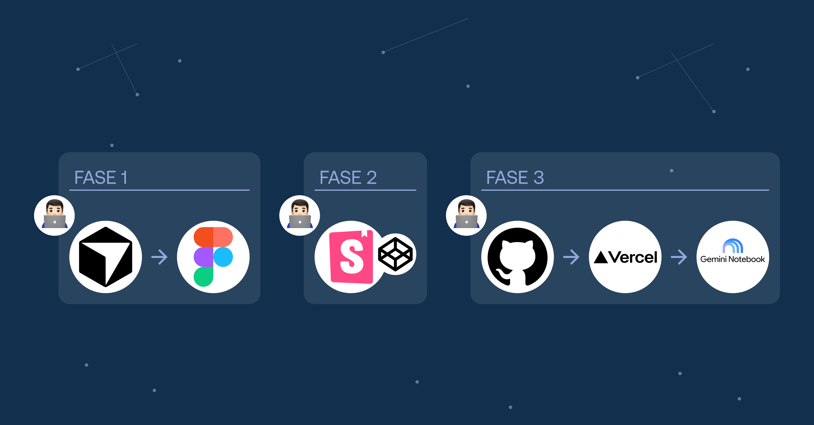
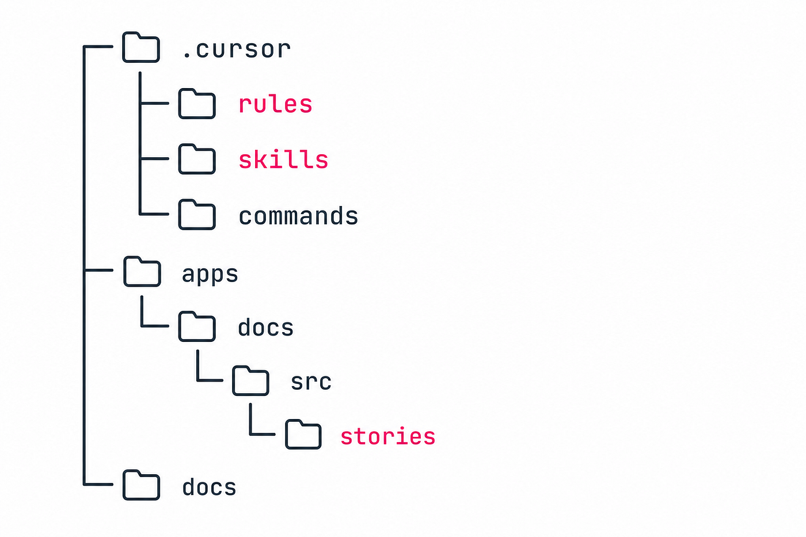
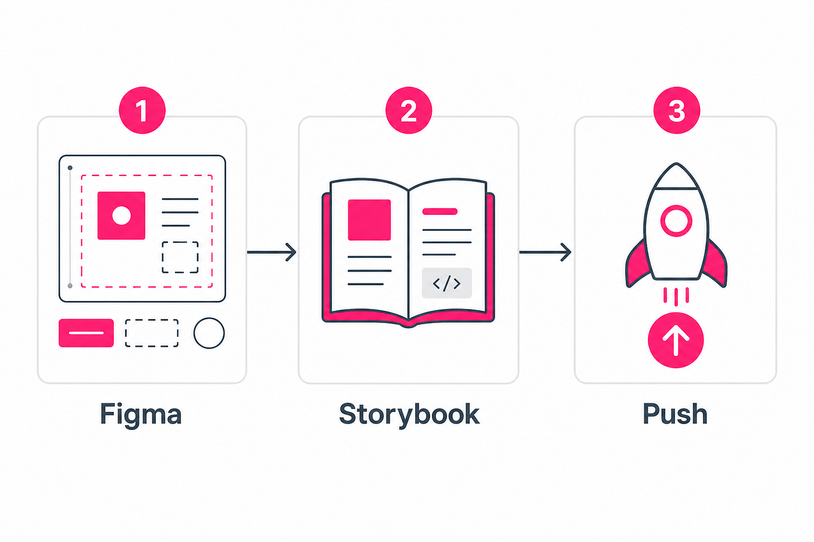
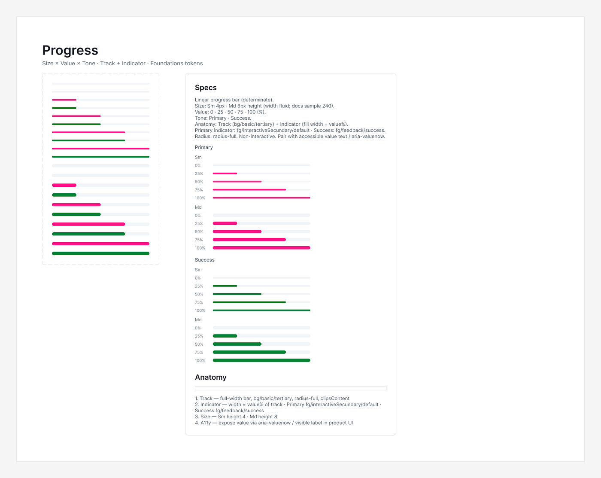
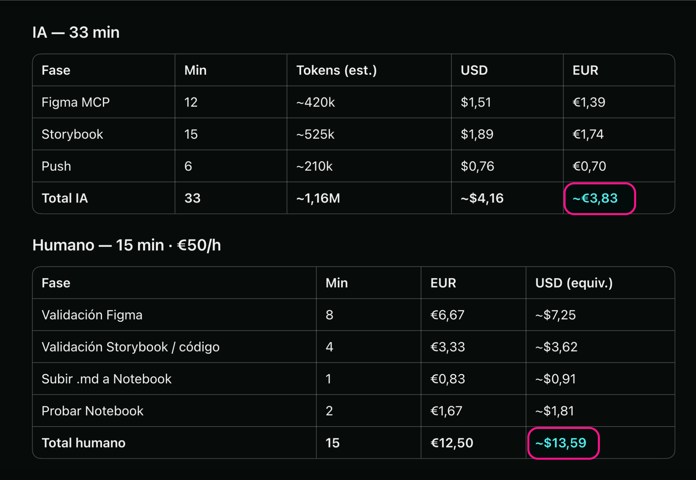

Dua Dupla DS
Figma + Storybook + un pipeline de tres frases. Lo que funciona de verdad, lo que no es magia, y por qué el humano sigue siendo el freno de mano.

Fecha: Nov 2025 – Ago 2026.
Descripción: Design System con un proceso de creación y documentación potenciado por IA, sin ceder el criterio humano.
Rol: Product Designer & DesignOps. Ideé el sistema, escribí las rules y skills, diseñé Foundations y componentes en Figma, y monté la documentación en Storybook hasta producción.
Plataforma: Figma · Storybook (web) · asistente Gemini Notebook.
Metodología: DesignOps. Disciplina externalizada: tres frases, dos puertas humanas, y un corpus para el asistente.
Herramientas: Figma MCP, Cursor, Storybook, CodePen, GitHub, Vercel, Gemini Notebook.
Atención spoiler: no construí un “agente autónomo que diseña solo”.
¿Qué fue lo que construí? Pues mi IA lo define así: “Un sistema operativo para diseñar y documentar a través de un agente de inteligencia artificial, compuesto de reglas escritas, skills con checklists, comandos y un pipeline de tres pasos que me obliga a mí a validar como humano, antes de seguir”.
El Design System de Dua Dupla — documentado en Figma y en Storybook, desplegado en Vercel — es el resultado de ese trabajo, hecho mano a mano con Cursor.
Si esperas un sistema de “pulsa un botón y sale el DS completo”, esto no va de eso. Si te interesa cómo encorsetar a un modelo para que no invente tokens, no salte a código sin Figma, y no haga push sin que tú digas “Push”, sigue leyendo.
El problema real
Un Design System no es solo componentes bonitos. Es:
- Variables en un solo sitio (el archivo de Foundations).
- Componentes con variantes.
- Documentación con anatomía, estados y accesibilidad.
- Y un camino hasta producción.
Cuando trabajas con un asistente de código, el riesgo no es que no sepa CSS. El riesgo es que mezcle fases: dibuje en Figma, implemente en Storybook y suba a GitHub en el mismo suspiro… sin que hayas mirado nada, ni tener la posibilidad de validarlo.
Eso me pasó un número de veces lo suficientemente amplio como para convertirlo en una regla (rule).
Qué hay realmente en el repo
En el proyecto no hay “9 agentes corriendo en paralelo”. Hay:
1. AGENTS.md — un mapa de roles (orchestrator, figma draw, Storybook docs, release…). Es el contrato de quién hace qué.
2. Rules (.cursor/rules/*.mdc) — políticas siempre o casi siempre activas. Ejemplos reales:
component-pipeline-3-steps.mdc— no mezclar Figma / Storybook / Push.variables-only-foundations.mdc— las variables viven en el archivo Foundations, no se crean en el archivo Components.push-github-vercel.mdc— “Push” implica commit + GitHub + verificar Vercel Ready.
3. Skills (.cursor/skills/*/SKILL.md) — procedimientos paso a paso. Los dos que más uso para componentes:
figma-draw-ds-component, para dibujar el set + Specs/Anatomy en Figma.add-new-ds-component, para documentar en Storybook (HTML + TypeScript, no un paquete React publicado).
4. Commands: /draw-figma-component y /add-new-component para disparar el rol correcto.
La estructura se ve más o menos así:
.cursor/ commands/ # slash commands rules/ # políticas del DS skills/ # procedimientos + checklists apps/docs/src/ stories/ # *.stories.ts + design-system.css stories/lib/ # render helpers + CSS por componente docs/ # specs, token mapping, visual targets AGENTS.md

El proceso vive en el repo: rules, skills, stories.
Honestidad importante: en el plan y en AGENTS.md aparece un camino Figma → React → Storybook (Astro) → Vercel. En este repositorio, lo que está en producción hoy es Storybook con helpers HTML/TS bajo apps/docs. No estoy fingiendo que ya hay un npm package de React listo para producto. El Storybook sí está vivo (aún en modo Work in Progress): dua-dupla-storybook.vercel.app.
El truco que más valor me ha dado: tres frases

De Figma a Storybook y a Production.
En lugar de un mega-prompt, el flujo de un componente nuevo es literalmente esto:
Paso 1 — «Vamos con componente X»
Yo escribo: “Vamos con Componente X”. El asistente crea el componente y las specs en Figma. No hace Storybook, commit, ni push.
Paso 2 — «Documentar en Storybook»
Yo escribo: “Documenta en Storybook”. El asistente hace render helper, CSS con tokens, stories Docs/Playground y build-storybook. No hace push. Reviso el código que genera el asistente para cada componente. Lo monto en una herramienta como CodePen, lo renderizo ahí y lo comparo con Figma: mismos tokens, tamaños, estados y variantes. Si el resultado no es el mismo, corrijo antes de seguir. Aquí tampoco hay push.
Paso 3 — «Push»
Escribo: “Push”. Cursor hace commit → git push → espera Vercel Ready y smoke check. Commit a GitHub, redeploy en Vercel y publicación del Storybook para que el equipo lo consulte.
Entre el paso 1 y el 2 reviso el componente en Figma, veo si están aplicadas las variables correctamente, puedo corregir un color, una tipografía, un espaciado o una variante.
Entre el 2 y el 3 reviso la documentación en Storybook (en local, con una URL localhost) y, además, saco el código del componente a CodePen — u otra sandbox similar — para validar que el resultado visual coincide con Figma. Sólo avanzo cuando esa paridad me convence. El modelo no “termina el trabajo” hasta que valido todo y le escribo el comando “Push”. Ahí es cuando sube a GitHub y hace redeploy en Vercel.
Ejemplo: al diseñar el componente Progress. En Figma quedó Size Sm/Md × Value 0–100 × Tone Primary/Success. Cambié el indicador Primary a fg/interactiveSecondary/default. Luego le pedí que lo documentara en Figma y Storybook. Y tras validarlo en Storybook y en CodePen frente a Figma, le dije “Push”. Commit 3e817ff, deploy Ready, stories components-progress — docs y — playground en producción. Sin saltos.

Componente Progress diseñado y documentado en Figma.
Después del Push: el asistente del DS
El proceso ya no acaba con el Push. Cuando el Storybook está en producción, Cursor genera un archivo .md con la documentación del componente que acabamos de crear. Yo lo subo a mano a Gemini Notebook. No hay API oficial; no fingimos magia ahí.
Ese notebook es el asistente virtual del sistema de diseño. El equipo pregunta ahí, en vez de saturar Slack: «¿Cuándo uso un Alert?», «¿Cuál es el hex del Error?», «¿Puedo poner dos button primary juntos?». Las respuestas van ancladas al corpus — la documentación subida de los componentes — y no inventan. Cierran con enlace a Storybook + Figma.
No es un chatbot que improvisa. Es el corpus del sistema, consultable.
Cuánto cuesta cada componente
Cuando el flujo se cierra, Cursor me da una valoración de lo que ha costado el proceso completo de diseño y documentación de ese componente: tokens consumidos, dólares y euros.
No es un dashboard de facturación. Es una línea de honestidad al final de cada ciclo: cuánto ha costado, en números, externalizar la disciplina de ese componente — Figma, Storybook, validaciones, push y export del markdown — sin vender que “la IA lo hace gratis”.

Coste del componente Alert, gasto de Cursor.
Foundations lo primero
Otra regla no negociable: las variables sólo en el file de Foundations. En el file Components se consumen las variables; no se crean. Cuando el agente dibuja en Figma, tiene que enlazar variables existentes (bg/basic/tertiary, fg/feedback/success, radius-full…). Si falta un token, se decide en Foundations — no se “hardcodea” un valor suelto en el componente y se olvida.
Eso también se refleja en código: CSS con --ds-* mapeados desde el diccionario de tokens, no magia por componente.
Qué documentamos en Storybook
Cada componente no es “un story suelto”. El skill exige, como mínimo:
- Docs (States, Anatomy, Do/Don’t, Props, A11y).
- Playground con controles.
- Canvas blanco en States/Anatomy (salvo excepción documentada).
- Y
npm run build-storybooken verde antes de dar el paso por cerrado.
Al inicio yo creé en Figma las Foundations y los componentes Button, Button Icon, Checkbox, Radio, Switch. Luego Cursor creó el resto de componentes; empezamos por los más sencillos: Divider, Badge, Tag, Avatar, Spinner y Progress. En próximos días iremos avanzando con componentes más complejos.
No todo nació perfecto. Avatar necesitó ajustes de tipografía. Progress cambió de token a mitad de camino. Badge y Tag pasaron por refinamientos de variantes y de navegación en la documentación. Eso es trabajo de Design System, con o sin IA.
Componente Progress documentado en Storybook.
Qué es (y qué no es) un agente
Cuando digo agentes, me refiero a roles documentados que el asistente asume al leer un skill o un command — no a nueve procesos independientes tomando decisiones por su cuenta.
Lo que sí automatiza de forma útil:
- Leer el contexto de Figma vía MCP.
- Crear variants y documentación con un patrón repetible.
- Generar stories y CSS alineados a tokens.
- Construir Storybook y empujar a GitHub/Vercel cuando yo lo pido.
- Exportar el markdown del componente para el corpus del asistente, y el informe de coste del ciclo.
Lo que no automatiza (y no debería):
- Decidir si el componente es el correcto para el producto.
- Aceptar un contraste dudoso porque “el build pasó”.
- Publicar en ningún sitio sin que yo lo revise.
- Subir el corpus a Gemini Notebook. Eso lo hago yo, a mano.
Lecciones honestas
- Escribir el proceso. Confiar en la memoria del chat no escala. Las rules y skills sobreviven a la conversación.
- Validaciones por humano, no velocidad falsa. Las puertas parecen lentas; evitan rehacer varias capas a la vez.
- Nombrar el stack real. Si el repo es HTML + Storybook, dilo. No vendas React si aún no está.
- La IA se equivoca en detalles de diseño. Tipografías, tokens mal enlazados, ortografía de tokens. El valor está en el bucle corto: captura → corrección → seguir.
- El DS reutilizable es el proceso, no solo los botones. Este layout de
.cursor/+AGENTS.mdestá pensado para copiarse a otro proyecto cambiando URLs de Figma y tokens.
Cierre
Montar un Design System con IA no es sustituir al diseñador ni al desarrollador. Es externalizar la disciplina: el checklist que siempre olvidas, el “no mezcles fases”, el “variables sólo en Foundations”, el “no hagas push hasta que diga Push”.
El sistema no es inteligente. Es insistente. Y, para un DS, insistir es casi todo.
Si quieres implementar un proceso de creación y documentación basado en IA como este en tu Design System, escríbeme.
El vídeo
Flujo completo creando el componente Alert: de la frase en Cursor al set en Figma, la documentación en Storybook, CodePen, el push a producción y el cierre del ciclo.
Creación del componente Alert · ~4 min